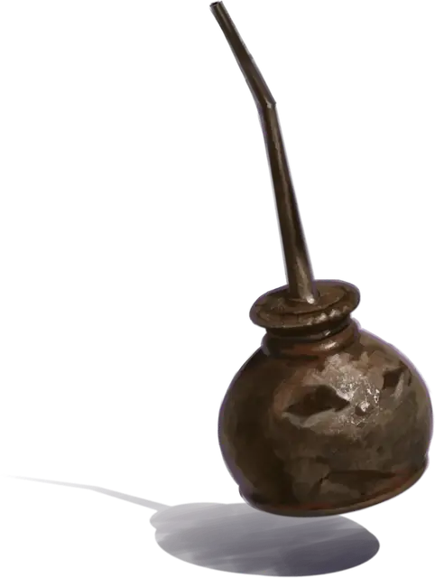

Маслёнка Выскочка
Squirt the Oilcan
Крошечный Конструкт, хаотично-нейтральный, именной НИП

Класс Доспеха 15 (природный доспех)
Хиты 17 (7к4)
Скорость 0 футов, летая 30 футов (парит)
| мод | спас | ||
|---|---|---|---|
| СИЛ | 3 | −4 | −4 |
| ЛОВ | 15 | +2 | +2 |
| ТЕЛ | 10 | +0 | +0 |
| мод | спас | ||
|---|---|---|---|
| ИНТ | 11 | +0 | +0 |
| МДР | 8 | −1 | −1 |
| ХАР | 15 | +2 | +2 |
Иммунитет к урону яд
Иммунитет к состояниям бессознательность, истощение, отравление, паралич
Чувства пассивное Восприятие 9
Языки Общий, Дварфийский, Сильван
Опасность 1/4 (50 опыта)
Бонус мастерства +2
Особенности
Обманчивая внешность. Если в начале боя Выскочка неподвижен, то он имеет преимущество в броске инициативы. Более того, если существо не наблюдало за движением или действием Выскочки, это существо должно преуспеть в проверке Интеллекта (Расследование) Сл 18 для чтобы определить, что Выскочка оживлён.
Необычная природа. Выскочке не требуется воздух, пища, вода или сон.
Действия
Удар. . Рукопашная атака оружием: +4 к попаданию, досягаемость 5 футов, одна цель. Попадание: 4 (1к4 + 2) дробящего урона.
Масло Боггла (3 применения). Выскочка расходует 1 порцию масла боггла, чтобы создать лужу скользкого негорючего масла площадью 10 квадратных футов на земле в пределах 5 футов от себя. Лужа считается труднопроходимой местностью и существует 1 час. Каждое существо, которое оказывается в области лужи или начинает там свой ход, должно совершить спасбросок Ловкости Сл 11, иначе упадёт ничком. На богглов масло не влияет. После того, как он израсходует все 3 применения, Выскочка не сможет использовать это действие снова, пока запас его масла боггла не будет пополнен.